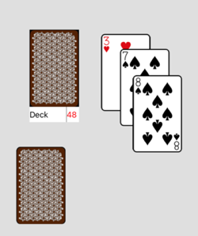
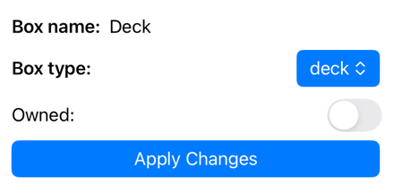
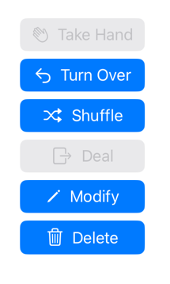
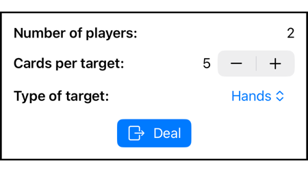

To familiarize yourself with how to move cards and use boxes, it is helpful play for a while in "solitaire mode". When starting the game, set yourself as leader and set the number of players to 1. Touch Play to reveal the "setup" screen", then touch Setup complete. You can then experiment with the features discussed here.
 The illustration shows examples of cards (both face up and face down) and boxes which contain cards. As you work through the details of this section, you should eventually be able to reproduce the illustration pretty closely (suits and denominations will differ because cards are always shuffled randomly).
Some Details follow.
Tapping a card that is not covered by other cards will cause it to turn over, unless the card is the top card of a deck or discard box. For those special cases, tapping the top card simply "dislodges" it from the box, allowing it to turned over with a second tap or moved away.
Tapping a card that is partly covered by other cards will bring the card to the front so that it is no longer covered. After that it can be tapped again to turn it over or it can be dragged by itself. A card that is completely covered by other cards (so that it cannot be tapped) remains covered until the covering cards are removed.
Cards may be dragged around the table-top view as part of play. If a card is not covered by any other card, it will be dragged by itself. If a card is partly covered by other cards, the cards covering the dragged card are dragged with it. In addition, cards that cover any other card being dragged will also be dragged. So, in the illustration, if you drag the nine of diamonds, the king and seven of diamonds move with it. If you drag the king, the seven will move with it but the nine will not. By first tapping either of the partly covered cards you change the relationship, of course. So, if you first tap the nine to bring it to the front, and then drag it, it will move by itself.
Boxes hold cards. They also have a "legend" containing an optional name label, an access-style indicator (up and/or down arrows or an exclamation mark), and a number (in red) indicating how many cards the box is currently holding. The access-style indicator is explained below.
Cards are added by dragging them until they partially overlap the box, at which point they "snap in." Boxes can be moved (their cards move with them). To move a box, grab it in the legend area (grabbing the card area is interpreted as grabbing the top card).
The leader's initial view of a game, prior to setup, always includes a box called "Deck" with all the cards of the playing deck in it. Other boxes are produced by dealing and by requesting creation of a box (see below).
Possible box access styles are
A deck box may contain only face down cards. Cards may not be added to it. The top card cannot be turned over in place but it can be moved entirely or partially off the box, after which it becomes an ordinary card. The deck box in the illustration happens to have the name "Deck", too, but, a box's name is distinct from its access-style.
A hand box is usually the result of dealing and are only offered when there is a private hand area. The cards in the box are always face down and cannot be added to or removed individually. A player may "take" a hand box, causing its contents to move into the private hand area, where the cards are turned face up.
A discard box may contain only face up cards. Cards may be added the box (and will automatically turn face up). The top card may also be dragged off (but not turned over in place). In some games, taking the top card from the discard pile is allowed, hence it is allowed with a discard box.
Some discard boxes have an "auto-yield" property (not visible), which can be selected when box is created. This property causes a player's turn to end as a side-effect of adding a card to the discard box. In some games this is a convenience, which tends to speed up the game because players don't have to both discard and touch the End Turn button. This setting is not appropriate for all games.
A general box may contain both face up and face down cards. If face up cards are added they go to the top of the pile and remain face up. If face down cards are added they go to the bottom and remain face down. The top card of a general box can always be removed.
In some games, after a deal, there may be a box for each player (often a hand, but sometimes an "owned deck"). A common error in such games is drawing or turning over a card from the wrong box. To avoid these errors, a box may be owned by a specific player. Only that player may add or remove cards, turn over the top card, take it (if it is a hand) or change the box's characteristics. Boxes become owned as a result of dealing (this feature can be turned off in the dealing dialog), at creation time (in which case they are owned by the creator), or in the box modification dialog.
You can create a box using a long press in an area where there is room for the box. There will usually be room unless there are multiple other boxes nearby. Only other boxes can interfere with box creation; if there are cards overlapping the new box they are immediately "snapped" up into the box.
Before actualy creating the box, you will be presented with a dialog that looks like the picture.  You can set the access style (or "kind of box") to "General", "Hand", ""Deck", "Discard", or "Discard (yield)". You can also specify the name of the box, and indicate whether you want to own the box.
Once a box is created (unless it is owned by another player), you can access special actions for it by tapping in the legend. A long press on the cards will also bring up the dialog. The result will look something like the nearby picture.  Not all of the buttons in the picture will necessarily appear, depending on the state of the box and of the game.
The Take Hand action only appears if the box is a hand and the game has been set up with a private hand area. The result is to move all the cards of the box into the private hand area and delete the box. This action is typically performed by each player after a deal in a game that has private hands.
The Turn Over action applies only to "Deck" and "Discard" boxes. It changes the former into the latter (and vice versa) while reversing the order of the cards, exactly as if you turned the pile of cards over in its entirety.
The Shuffle action randomizes the order of cards in the box without changing anything else about it. Note that the initial "Deck" box at the start of a game is already shuffled. But, shuffling may be appropriate at other times.
The Deal action produces new boxes (or just piles of cards) from some or all of the contents of an existing box. It is only available when the "dealing area" is free of existing cards and boxes. This area is at the bottom of the playing area (above the private hand area if there is one) and occupies the width of the screen for the height necessary to fit the results of the deal.
The details of the deal are guided by a popup, as shown in the picture. The number of players is reprised in the popup since there will always be one target per player. The number of cards per target is selectable from 2 up to the maximum number that can be dealt from the source box. The type of targets to produce is also selectable as Hands, Piles, Owned Decks, Shared Decks, Owned Discards, or Shared Discards. As discussed elsewhere, Hands Decks and Discards are kinds of boxes. Hands are always owned, whereas the other two target types may be owned or not as you wish. The Piles target produces a pile of cards that is not in a box and will behave in accordance with the normal rules for moving cards.
The Modify action brings up the dialog shown earlier for box creation. it allows you to change a box's name, access style, or Owned indicator. But, note that you will not be able to get to this point if the box is owned by a player other than you. So, in practice this allows you give up ownership if you own the box, or to take ownership of an unowned box. Note also that hands are always owned and that cannot be changed in the dialog.
The Delete action deletes a box. Note that this does not delete the cards that are in the box. They are left in place in an ordinary "pile" from which they can then be moved in accordance with the general rules for cards. To undo this action, a long press on the pile of cards will bring up the box creation dialog and cause the cards left in the pile to belong to the new box (a newly created box always "snaps up" cards that it overlaps).
Depending on how the game is set up, there may be a private hand area at the bottom of the screen (separated from the playing area by a horizonal line). You can drag cards into and out of this area. A card will "snap into" the private area if more than half its height falls within that area or will "snap out" (back into the public area) if less than half its height is there. Cards in the private area are not visible to other players.
Bear in mind that cards do not turn over automatically when snapping in or out of the private area (if they are face up they remain face up). Often you will want to drag a card into the private area while it is face down and only turn it over once it is in the private area.
A common paradign for using the private area is for a player to perform a deal specifying Hands as the target. Each hand belongs to a player, who can then "take" the hand when that player's turn comes. The easiest way to take a hand is to touch or start dragging the top card of the hand. The hand will react by moving the cards to the private area and turning them face up.
As discussed previously, exactly one player will have the role of leader. That player will have a Setup Game button. Touching this button brings up a dialog, as shown. The actions in the dialog may be only part of what it means to set up the game. Other chores might consist of making additional boxes and arranging both cards and boxes in the appropriate configuration for the game.
Setting up a game may be done either before connecting the players or afterwards, but, in either case, the setup phase is considered to be part of the leader's first turn to play (the leader always plays first). When the leader finishes setting up, the leader can yield to the next player (who then has the first real move in the game) or the leader may take that first move and then yield. Once the leader's first turn ends, the Setup Game button is no longer displayed.
The Deck Type decides the repertoire of cards that will be part of the game. The Standard deck consists of the 52 cards, ace through king, of suites spades, hearts, diamonds and clubs, with no jokers. In general, the playing deck can have any subset of these cards and up to two jokers. The repertoire can then be multiplied, duplicating each card the desired number of times.
In practice, the capability to design an arbitrary deck is not exposed to users, so you have to select from a set of named decks, which you can do by first touching the current selection to bring up the complete list, then touching the desired selection.
The Private Hand Area control determines whether there is an area reserved at the bottom of the screen that is private to each player and not shared. Touch the current setting to toggle between Present and Absent.
The Deal action opens the dealing dialog on the one box on the screen that has the name "Deck" (this box is always present in a new game that has not yet been set up). It allows you to create new deck boxes containing the "hands" for the game. These may be left as boxes or converted into actual hands (in the private hand area) by each player on his first turn.
The Save As action permits you to save the current game setup for later use, assigning it a name to remember it by. Note that the entire state of the screen is saved, not just the attributes controlled by this dialog. So, a common practice is to first use the dialog to establish the deck type and private hand setting and to deal the cards. Then, exit the dialog and perform other actions (like creating discard boxes and positioning things on the screen). Then return to the setup dialog and save the setup.
The Use Saved Setup action brings up a list of saved setups which you can select by name. The saved setup will replace current game state. This dialog also allows you delete saved setups by sliding entries to the left to reveal a delete button (a common iOS interaction paradigm).
It is useful to understand what is and isn't saved and restored when you use this capability. The exact card denominations are not restored as such (otherwise you would be playing the identical shuffle and deal over and over again). Rather, the positions of all the cards and boxes, the properties of the boxes, and which cards are face up or face down are restored, but then the actual cards are re-shuffled within this framework so that you are always playing with a fresh shuffle and deal.
The Reset action restores the playing area to its state prior to dealing or moving any cards. This is useful if you make a hard-to-undo mistake while setting up a game.
Once the players have found each other, the top area of the leader's screen will look like the first picture and other players will have a top area that looks more like the second picture.
The top row of boxes list the players of the game, in the same order on every player's screen. The leader is always listed first. The player whose turn it is colored green. On each player's device, the player who owns that device is highlighted with asterisks and italics. Note in the two pictures that Putt-putt is green in both pictures but only highlighted with asterisks and italics in the first picture (showing the screen belonging to the player called Putt-putt). The screen belonging to the player called Joshie has Joshie highlighted with asterisks and italics.
All players have an End Game button, which they can touch at any time. Any player can end the game pre-emptively at any time by pressing this button. Terminating the app or suspending it will also end the game for everyone.
The player whose turn it is (but not other players) will have a Yield button. This button ends the player's turn and passes the right to play on to the next player in the rotation.
Only the player whose turn it is may move or modify the cards and boxes on the playing screen. There is an exception for cards in your private hand. These may be moved or turned over at any time as long as they stay within the private hand area. You will only be able to move cards into or out of the this area when it is your turn.
Note that the leader's screen shows the Setup Game button. This will continue to show until the leader touches Yield for the first time, ending his very first turn. Recall that the chore of setting up the game belongs to the leader and must be completed by the end of his first turn.
Beyond the enforcement of "whose turn is it", and the limitations imposed by box access styles and box ownership, there are no real rules. The AnyCards app does not know what card game is being played.